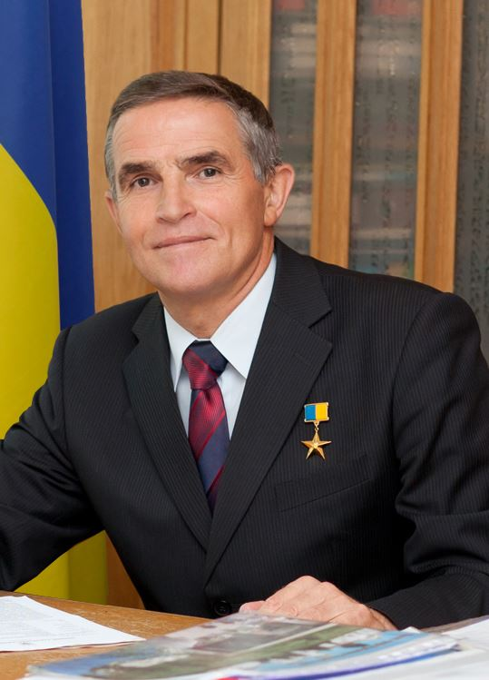

Леонід Костянтинович Каденюк народився в Чернівецькій області, в селі Клішківці, 28 січня 1951 року. Він закінчив льотне училище Чернігова і ще в 1976 році був відібраний в групу радянських космонавтів, які повинні були літати на багаторазовому космічному кораблі "Буран".
Радянський "Буран" так і не дістався до космосу, тому Каденюк перекваліфікувався на льотчика-випробувача, а також здобув вищу освіту в Московському авіаційному університеті.
Після проголошення незалежності України Леонід Каденюк прийняв українське громадянство і вже в 1995 році був відібраний в групу космонавтів Національного космічного агентства України.
У 1997 році Леонід Каденюк став першим космонавтом незалежної України, який побував у космосі. Він вийшов на навколоземну орбіту на багаторазовому шатлі NASA "Колумбія", в складі екіпажу місії STS-87.
Після повернення на Землю, Леонід Каденюк був радником президента з питань авіації і космонавтики, і навіть балотувався в народні депутати. У 1999 році був нагороджений званням Герой України. Пізніше увійшов до складу Національного космічного агентства України, був радником генерального директора агентства. Займався науковою роботою, написав книгу "Місія – космос".
Леонід Каденюк помер 31 січня 2018 від серцевого нападу. Він був похований на Байковому кладовищі в Києві. У космонавта залишилися дружина і двоє дітей.
